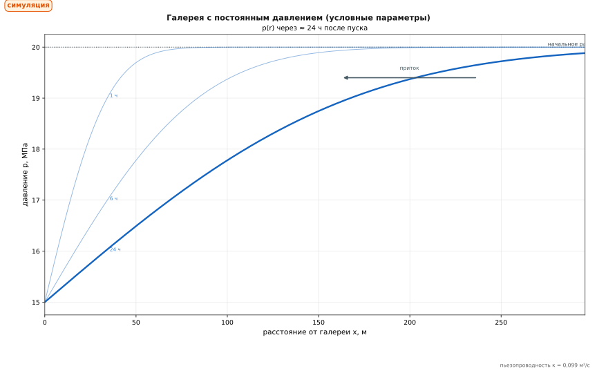

Давление на галерее мгновенно снижают и дальше держат постоянным, но внутри пласта оно меняется со временем.
Задачу решают одномерным уравнением пьезопроводности для полубесконечного пласта.
Пороговая идея. Постоянное давление на галерее не означает постоянного давления внутри пласта. модель
Как это работает
Постановка задачи
Пласт горизонтальный и полубесконечный: он начинается у галереи и не имеет внешней границы. Это идеализация. стр. 481
«в полубесконечном горизонтальном пласте постоянной толщины $h$ и ширины $B$»
Толщина пласта постоянна. Ширина пласта тоже постоянна. стр. 481
«в полубесконечном горизонтальном пласте постоянной толщины $h$ и ширины $B$»
«в полубесконечном горизонтальном пласте постоянной толщины $h$ и ширины $B$»
До пуска давление одинаково по всему пласту. стр. 481
«начальное пластовое давление всюду постоянно и равно $p_\kappa$.»
Галерея — линейная выработка, через которую отбирают жидкость. Давление на ней мгновенно снижается до нового значения. стр. 481
«На галерее (при $x = 0$) давление мгновенно снижено до $p_\tau$ и в дальнейшем поддерживается постоянным (т.е. $p_\tau = \text{const}$).»
После скачка давление галереи постоянно. На бесконечном удалении давление всё время остаётся начальным. стр. 481
«На галерее (при $x = 0$) давление мгновенно снижено до $p_\tau$ и в дальнейшем поддерживается постоянным (т.е. $p_\tau = \text{const}$).»
«В удаленных точках ($x \to \infty$) давление в любой момент времени остается равным $p_\kappa$.»
Что происходит в пласте
Пласт деформируемый. По выводу автора, в нём возникает меняющийся во времени прямолинейно-параллельный поток упругой жидкости. стр. 481
«При этих условиях в упругом (деформируемом) пласте образуется неустановившийся прямолинейно-параллельный поток упругой жидкости.»
Уравнение пьезопроводности позволяет найти давление в любой точке и в любой момент. стр. 481
«Давление в любой точке потока $x$ и в любой момент времени $t$ можно определить, интегрируя уравнение пьезопроводности (23.17)»
Скорость изменения давления во времени равна пьезопроводности, умноженной на вторую производную по координате. Уравнение действует внутри пласта. стр. 481
Постоянное давление на галерее не означает постоянного давления внутри пласта. стр. 481

Профили давления от галереи вглубь пласта в разные моменты при условных параметрах. На галерее давление постоянно, а внутри пласта оно падает всё дальше со временем.
Класс B · симуляция · нарисовано кодом · стр. 481
Все утверждения шага с дословной цитатой автора и страницей книги (по PDF).
Пласт в задаче полубесконечный и горизонтальный. допущение
«в полубесконечном горизонтальном пласте постоянной толщины $h$ и ширины $B$»
Толщина пласта постоянна. допущение
«в полубесконечном горизонтальном пласте постоянной толщины $h$ и ширины $B$»
Ширина пласта постоянна. допущение
«в полубесконечном горизонтальном пласте постоянной толщины $h$ и ширины $B$»
До пуска давление одинаково по всему пласту. допущение
«начальное пластовое давление всюду постоянно и равно $p_\kappa$.»
На галерее давление снижается мгновенно до нового значения. допущение
«На галерее (при $x = 0$) давление мгновенно снижено до $p_\tau$ и в дальнейшем поддерживается постоянным (т.е. $p_\tau = \text{const}$).»
После скачка давление галереи постоянно. допущение
«На галерее (при $x = 0$) давление мгновенно снижено до $p_\tau$ и в дальнейшем поддерживается постоянным (т.е. $p_\tau = \text{const}$).»
На бесконечном удалении давление всё время остаётся начальным. допущение
«В удаленных точках ($x \to \infty$) давление в любой момент времени остается равным $p_\kappa$.»
В деформируемом пласте возникает меняющийся со временем прямолинейно-параллельный поток упругой жидкости. вывод
«При этих условиях в упругом (деформируемом) пласте образуется неустановившийся прямолинейно-параллельный поток упругой жидкости.»
Уравнение пьезопроводности позволяет находить давление в любой точке и в любой момент. вывод
«Давление в любой точке потока $x$ и в любой момент времени $t$ можно определить, интегрируя уравнение пьезопроводности (23.17)»
Скорость изменения давления во времени равна пьезопроводности, умноженной на вторую пространственную производную; уравнение действует внутри пласта. вывод
Случай 1. Приток к галерее, на которой поддерживается постоянное давление. Пусть в полубесконечном горизонтальном пласте постоянной толщины $h$ и ширины $B$ начальное пластовое давление всюду постоянно и равно $p_\kappa$. На галерее (при $x = 0$) давление мгновенно снижено до $p_\tau$ и в дальнейшем поддерживается постоянным (т.е. $p_\tau = \text{const}$). В удаленных точках ($x \to \infty$) давление в любой момент времени остается равным $p_\kappa$.
При этих условиях в упругом (деформируемом) пласте образуется неустановившийся прямолинейно-параллельный поток упругой жидкости. Давление в любой точке потока $x$ и в любой момент времени $t$ можно определить, интегрируя уравнение пьезопроводности (23.17), которое для одномерного течения в декартовой системе координат запишется в виде: